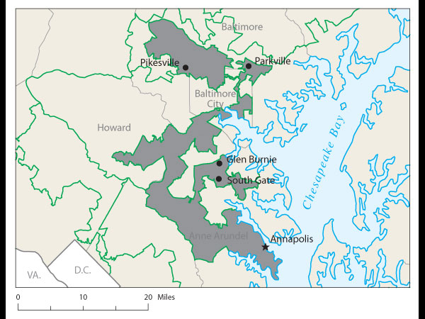

Originally published in the Boston Centinel, 1812.
From wikipedia
{kind=link}

One of the hallmarks of the American system of government is the principle of proportional representation, or one person, one vote. This applies to the House of Representatives and most state and local governments, but not to the US Senate or the Electoral College. It also took a while, as slaves were originally counted as a fraction and a person and could not vote, and women could not vote until early in the 20th century.
Redistricting traditionally rewards the party in power, and has also been used to minimize the power of racial minorities. The party in power typically wants to create as many districts as possible giving themselves a comfortable majority (say 55%, but the party in power can decide how confident they are of "their" voters, and they could win with just 50.1% of the vote, or even less if there were more than two parties). This process is call "cracking", since it tries to spread the party out of power into as many districts as possible where they will be the minority. If this is not possible, then "packing" tries to put the minority party into as few districts as possible, ideally where they would have as close to 100% of the vote as possible.
For a famous example of redistricting, in 2003 the Texas state legislature redistricted their 32 seats in the US House of Representatives. Before the redistricting, the Democats had a 17-15 advantage. After the redistricting, the Republicans had a 21-11 advantage, a swing of 6 seats. This is possible because nationally the Democrats tend to dominate urban area and Republicans rural area, and you can pack Democrats into a few urban districts, or crack Republicans by making districts combine urban and suburban areas. This redistricting, done after the normal redistricting immediately following the decennial census, was orchestrated by the US House Majority Leader Tom DeLay, who resigned shortly afterward due to money laundering charges on which he was convicted in 2011.
Redistricting attempts to:
While various impartial and unbiased algorithms have been proposed, and some states attempt to have a non-political commission do the work, there is no ideal solution and the results typify the old adage about how even if you love sausage, you don't really want to know how it's made.
The redistricting file supplied by the US Census Bureau after every decennial census consists of five detailed tables: the first shows the population by race, including six single race groups and 57 multiple race groups (63 total race categories); the second shows the Hispanic or Latino population as well as the non-Hispanic or Latino population cross-tabulated by the 63 race categories. These tabulations are repeated in the third and fourth tables for the population 18 years and over.
|
|
Original political cartoon of "The Gerry-Mander",
which led to the coining
of the term
Gerrymander. The district depicted in the
cartoon was created by
Massachusetts
legislature to favor the incumbent
Democratic-Republican party candidates of
Governor
Elbridge Gerry over the
Federalists in 1812. Originally published in the Boston Centinel, 1812. From wikipedia |
|
 |
Maryland's 3rd Congressional District,
2002-2012. The boundaries cannot be
understood in isolation, but in the overall
context of creating minority districts, and
keeping the opposition party from getting too
many representatives. This is not a
majority black district, but borders two of
those, one of which has equally irregular
borders. |
 |
Proposals for redistricting in Utah in 2011, 4 congressional districts:
|
In addition to the
Wikipedia article on gerrymandering, the book
Bushmanders and Bullwinkles: How Politicians Manipulate Electronic Maps and
Census Data to Win Elections by Mark Monmonier is a very readable expose on
the process.
Last revision 11/1/2018